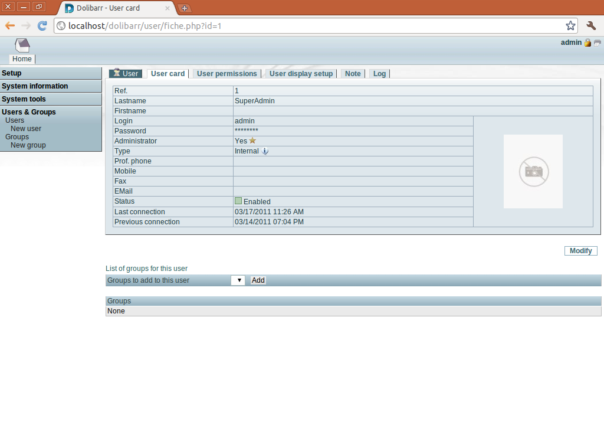

感謝您對「自由軟體鑄造場」的支持與愛護，十多年來「自由軟體鑄造場」受中央研究院支持，並在資訊科學研究所以及資訊科技創新研究中心執行，現已完成階段性的任務。 原網站預計持續維運至 2021年底，網站內容基本上不會再更動。本網站由 Denny Huang 備份封存。
也紀念我們永遠的朋友 李士傑先生（Shih-Chieh Ilya Li）。
也紀念我們永遠的朋友 李士傑先生（Shih-Chieh Ilya Li）。
ERP 與 CRM 合而為一 -- Dolibarr ERP & CRM
建立日期 2011-03-21 18:27 最近更新在 2011-03-22 20:03
簡介
在進入資訊化時代之後，過去採用人工處理或以紙本進行控管的事務，都慢慢轉向電子化流程。因應這些需求也產生各類不同用途的軟體系統，甚至專門設計開發這些軟體系統的公司也因應而生。受限於人力與物力最佳化的原則，大多數的公司或組織可能無力自行開發相關的系統，因此常見的運作模式，是採用市面上現成的產品，或是委請軟體開發商代為設計合適的系統。
事實上，有許多此類免費軟體可以線上下載使用，而且大多數都是採用開放原始碼的方式進行散佈。這些軟體系統即使內建功能一開始不敷需求，亦可自行修改程式以加入新功能。甚至有部份系統設計採用外掛模組的方式，學有專精的程式設計師或熱心人士得以自行開發模組，使用者可以決定是否安裝這些外掛模組以便擴充功能。如此一來，不僅不需擔心功能太少無法滿足使用需求，也不必擔心為了新增功能到系統之中，必須自行培育相關的技術人員。以本文所介紹的 Dolibarr ERP & CRM 為例，便是一套採用開放式原始碼、提供外掛模組支援功能的線上輔助系統。
官方網站：https://www.dolibarr.org/
下載網址：
Ubuntu/Debian 版本：https://ncu.dl.sourceforge.net/project/dolibarr/DoliBuntu%20%28Dolibarr%20ERP-CRM%20Ubuntu%20installer%29/2.9.0/dolibarr-2.9.0.deb (8.8MB)
其他發行版本：https://ncu.dl.sourceforge.net/project/dolibarr/Dolibarr%20ERP-CRM/2.9.0/dolibarr-2.9.0.tgz (7.9MB)
▲ 圖1 Dolibarr ERP & CRM 的執行畫面
彈性化的運用模式
Dolibarr ERP & CRM 是一套小型、簡易化的 ERP 與 CRM 管理系統，以網頁模式作為使用者介面，操作容易，使用門檻低。ERP 是企業資源計劃 (Enterprise Resource Planning, ERP)，又譯為企業資源規劃。ERP 是一種管理各類流程的應用系統，可以用於生產管理、供應鏈管理、財務及會計管理、人力資源管理、客戶關聯管理、資料倉儲管理。CRM 是顧客關係管理 (Customer Relationship Managemnet, CRM)。CRM 以資料庫的方式，儲存顧客基本資料及互動歷史，以供授權人員根據資料庫內容，加強客戶服務並藉以發展正確的企業經營策略。Dolibarr ERP & CRM 同時提供 ERP 與 CRM 功能，使用者可以依照自己的需求決定單獨使用 ERP 或 CRM 的功能，也可以同時啟用 ERP 及 CRM 雙功能，使用上極具彈性。
▲ 圖2 主要提供 ERP 與 CRM 相關功能，可依照需求自行決定使用功能。
簡易化的使用流程與模組化的設計
Dolibarr ERP & CRM 在設計上的最大理念，便是提供一套架構簡單、操作容易的軟體系統。這樣的設計理念從安裝軟體時便能輕易看出。安裝 Dolibarr ERP & CRM 時，僅需要在網頁模式下執行安裝程式，再依照畫面指示、加上伺服器端的相關設定，即可完成安裝。簡易的流程大幅減少安裝過程中可能面臨的問題。如此一來，即使使用者不熟悉如何設定與管理網頁伺服器、資料庫，也完全不需要研讀技術文件、或不具備資訊工程相關的技術背景，仍然可以輕易完成安裝。
Dolibarr ERP & CRM 可以在多種作業系統上執行。只要作業系統能支援 AMP 架構，也就是可以執行 Apache 網頁伺服器、MySQL 資料庫，並可支援 PHP 語言的系統，都能作為 Dolibarr ERP & CRM 的安裝平台，包括 Windows 系統、Linux 系統，或是 Mac OS X。甚至不熟悉如何安裝 AMP 架構的使用者，也可以透過 Dolibarr ERP & CRM 所提供的安裝套件，直接將 AMP 架構安裝完成。以 Linux 系統為例，只要是 Debian 或 Ubuntu 版本，都可以使用 DoliBuntu 直接安裝 AMP 架構。如果使用的是 Windows 系統，可以透過 DoliWamp 進行安裝；Mac OS X 則可以使用 DoliMamp 安裝 AMP 架構。這三個套件都能在官方網站的下載區中找到，是提供使用者快速安裝 AMP 架構與 Dolibarr ERP & CRM 的管道。

▲ 圖3 Dolibarr ERP & CRM 無論在安裝、設定或使用上都相當容易。
Dolibarr ERP & CRM 本身是以外掛模組的方式進行設計。也就是說，使用者可以依個人需求，決定要啟用哪些功能模組、並關閉不必要的功能。如此一來可以確保系統資源用於必要的功能中，不至於浪費在沒有使用需求的功能上。
在 Dolibarr ERP & CRM 安裝完成後，系統預設提供多種外掛模組供使用者選用。它提供許多常見的 ERP 或 CRM 相關的管理功能，例如：各種活動的管理、產品管理、提案計畫的管理等等。如果涉及例如客戶下單等商業行為，可以開啟使用出貨管理功能、訂單管理功能等進行管理，並可隨時追蹤目前的執行進度。用不著訂貨／出貨／訂單管理功能的組織單位，也可以使用會員管理功能，掌握目前所有會員的現況，或是利用 Mailing List 的功能發送電子郵件，以便將組織內的最新資訊傳送給所有會員。它可供選擇的多樣模組還包括：股票管理、銀行帳號管理、客戶／廠商／潛在客戶管理、聯絡人管理、出貨管理、付款管理等等。關於產品訂單管理或企業內的計畫提案，也有對應模組可以選用。同時，它還提供 PDF 輸出功能，使用者可以將相關報表以 PDF 格式輸出。Dolibarr ERP & CRM 支援多元功能的特性，創造了它與其它同類型產品之間的差異特點。
▲ 圖4 以外掛模組方式進行設計，使用者可自行決定啟用的功能。
多國語系支援
目前 Dolibarr ERP & CRM 已經支援許多不同語言，但中文的部份只支援簡體中文。由於 Dolibarr ERP & CRM 的多國語系架構設計得相當良好，要支援新的語言其實相當容易。如果希望以正體中文的方式顯示所有訊息，可以直接將放置英文語系的目錄複製一份，予以重新命名，成為儲存正體中文相關檔案的新目錄。接下來按照原有語系檔案內容的架構，將相對應的訊息翻譯為正體中文，即可在 Dolibarr ERP & CRM 的設定畫面中選擇語系為正體中文。如果建立新語系的過程中有任何問題，亦可直接參考 Dolibarr ERP & CRM 所提供的相關文件。在這些文件當中，Dolibarr ERP & CRM 的開發團隊已經針對語系翻譯時應注意的事項，提供良好的說明。只要按圖索驥，依文件指示進行，便可以解決在翻譯時會遭遇到的困擾。
如果翻譯完成的語系檔案想提供給 Dolibarr ERP & CRM 的開發團隊使用，亦可透過電子郵件與開發團隊聯絡。如此一來，下一個 Dolibarr ERP & CRM 釋出的版本就會支援您提供的新語系。
▲ 圖5 支援多國語系的 Dolibarr ERP & CRM 目前尚未提供正體中文支援，但要進行翻譯並不困難。
結語
對於中小企業或是機關團體而言，選擇軟體系統時，經常無法兼顧預算精簡與需求滿足。如果企業或組織策略並非只能使用商業軟體，像 Dolibarr ERP & CRM 這種開放原始碼的軟體系統，也是相當合適的選擇之一。雖然一般建議 Dolibarr ERP & CRM 適合在中小企業的環境下使用，這並不表示 Dolibarr ERP & CRM 在大型企業沒有立足之地。同時，企業內即使單一部門的營運事務達到一定規模，多半也需要類似軟體作為管理的輔助工具。此時便可以考慮導入 Dolibarr ERP & CRM，相信也能為工作上帶來許多幫助。
附註
Dolibarr ERP & CRM 官方網站有提供試用站台，其網址為「https://demo.dolibarr.org/public/demo/」，使用「demo」作為登入名稱與密碼，登入後即可進行操作。作者簡介
翁卓立逢甲大學資訊工程學系、台灣科技大學電子所畢業，目前擔任韌體研發工作，主要使用 Embedded Linux 進行產品開發。著有「Linux 進化特區：Ubuntu 10.04 從入門到精通」等書。專欄總覽


自由軟體鑄造場 製作 最佳瀏覽狀態：IE7或Firefox2.0以上 (建議使用Firefox) ‧ 解析度1024*768
E-Mail：contact@openfoundry.org Address：台北市南港區研究院路2段128號 中央研究院資訊科學研究所 . 隱私權條款. 使用條款
E-Mail：contact@openfoundry.org Address：台北市南港區研究院路2段128號 中央研究院資訊科學研究所 . 隱私權條款. 使用條款